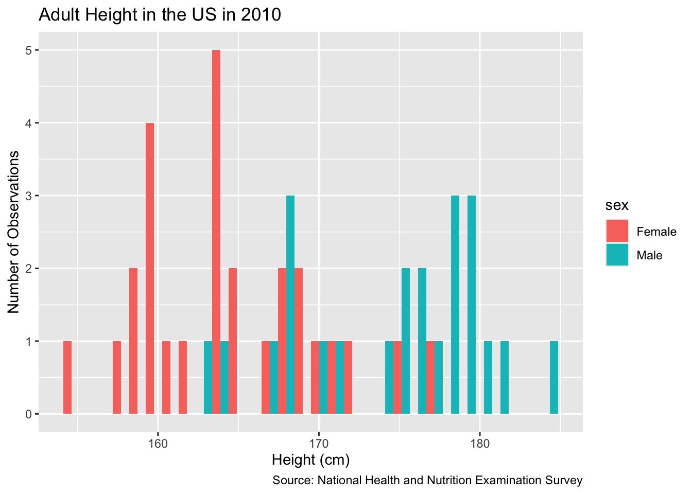
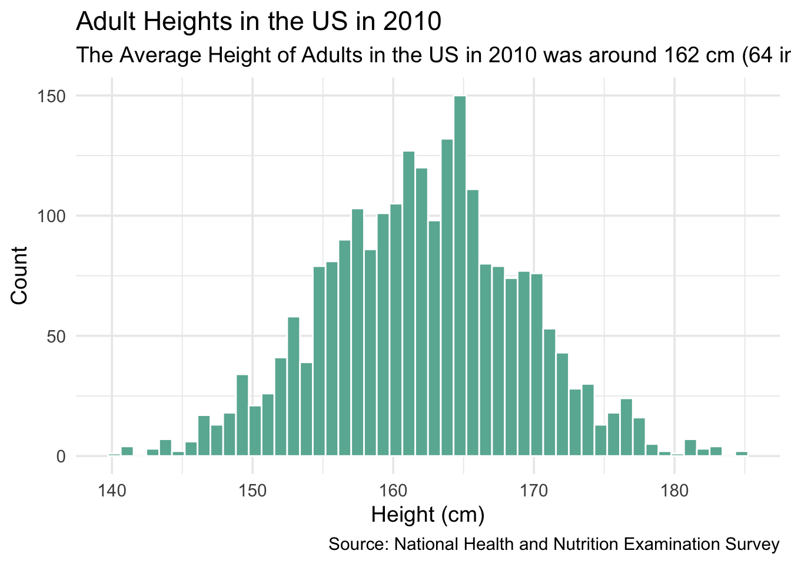

5 Two Parameters
Chapter 4 used a logistic regression model, an appropriate approach when the outcome variable takes on just two possible values, generally recoded as 0 or 1. In this chapter, we will a linear regression model because our outcome variable, height, is continuous.
The reason for making models is not, primarily, that making models is fun – although it is! The reason is that the world confronts us. Make decisions we must. We must decide between options X or Y. We must choose from actions A, B and C. Confronted by a choice, we need to make a model of the world to help us choose wisely.
The real world is complex. Any substantive decision problem includes a great deal of complexity and requires even more context. We do not have the time to get into that level of detail now. So, we simplify. We are going to create a model of height for adults. We will then use that model to answer:
- How does average height differ between men and women?
Data science is ultimately a moral act, so we will use the four Cardinal Virtues — Wisdom, Justice, Courage and Temperance — to guide our approach.
5.1 Wisdom

Wisdom begins with the Preceptor Table. What data would we, ideally, require to answer our questions? We then explore the data that we actually have. We apply the concept of validity to ensure that the data we want and the data we have are similar enough to allow the latter to inform us about the former.
5.1.1 Preceptor Table
Which rows and columns of data do you need such that, if you had them all, the calculation of the quantity of interest would be trivial? The steps we usually take to construct the Preceptor Table include:
Units: All the adults in the world, one row per person.
Outcome: This is the variable which we are trying to explain/understand/predict. This is not the same thing as the answer to the question we have been asked. Our question is aboit average height, but the height of each individual is our outcome variable. If we can build a model which explains/understands/predicts individual height, we can use that model to answer our questions about average height.
Treatment: There are no treatment variables.
Causal or predictive model: We have only one outcome, so the model is predictive.
Covariates: Since our question asks about the difference between men and women, at least one of our covariates must be sex.
Moment in Time: This is often implicit in the question itself. One of our key roles as data scientists is to clarify the questions which we are asked. In this case, it seems clear that the questions refer to now, the present moment.
Predictive models care nothing about causation. Causal models are often also concerned with prediction, if only as a means of measuring the quality of the model. Here, we are looking at prediction.
So, what does our Preceptor Table look like? Assuming we are predicting height for every adult on Earth at this moment in time, we would have height data for every person at least 18 years of age. This means that we would have about 8 billion rows, one for each adult, along with a column for each individual’s height and sex.
Here are some rows from our Preceptor Table:
| Preceptor Table | ||
|---|---|---|
| ID |
Outcome
|
Covariate
|
| Height | Sex | |
| 1 | 150 | F |
| 2 | 172 | M |
| … | … | … |
| 5000 | 160 | M |
| 5001 | 142 | F |
| … | … | … |
| N | 190 | M |
This table would extend all the way until person 8 billion-and-something. We don’t know the number of rows, so we use N. If we had this table, all of our questions could be answered with simple math. No inference is necessary if we have a Preceptor Table. But what does our actual data look like?
5.1.2 EDA
Consider the nhanes data set from the National Health and Nutrition Examination Survey conducted from 2009 to 2011 by the Centers for Disease Control and Prevention.
Rows: 10,000
Columns: 15
$ survey <int> 2009, 2009, 2009, 2009, 2009, 2009, 2009, 2009, 2009, 2…
$ sex <chr> "Male", "Male", "Male", "Male", "Female", "Male", "Male…
$ age <int> 34, 34, 34, 4, 49, 9, 8, 45, 45, 45, 66, 58, 54, 10, 58…
$ race <chr> "White", "White", "White", "Other", "White", "White", "…
$ education <fct> High School, High School, High School, NA, Some College…
$ hh_income <fct> 25000-34999, 25000-34999, 25000-34999, 20000-24999, 350…
$ weight <dbl> 87.4, 87.4, 87.4, 17.0, 86.7, 29.8, 35.2, 75.7, 75.7, 7…
$ height <dbl> 164.7, 164.7, 164.7, 105.4, 168.4, 133.1, 130.6, 166.7,…
$ bmi <dbl> 32.22, 32.22, 32.22, 15.30, 30.57, 16.82, 20.64, 27.24,…
$ pulse <int> 70, 70, 70, NA, 86, 82, 72, 62, 62, 62, 60, 62, 76, 80,…
$ diabetes <int> 0, 0, 0, 0, 0, 0, 0, 0, 0, 0, 0, 0, 0, 0, 0, 0, 0, 0, 0…
$ general_health <int> 3, 3, 3, NA, 3, NA, NA, 4, 4, 4, 4, 4, 2, NA, NA, 3, NA…
$ depressed <fct> Several, Several, Several, NA, Several, NA, NA, None, N…
$ pregnancies <int> NA, NA, NA, NA, 2, NA, NA, 1, 1, 1, NA, NA, NA, NA, NA,…
$ sleep <int> 4, 4, 4, NA, 8, NA, NA, 8, 8, 8, 7, 5, 4, NA, 5, 7, NA,…This nhanes table contains 10,000 entries from the 2009 survey, each representing an individual’s health and demographic data. The dataset includes repeated values, likely from individuals in the same household, and has some missing data in variables like pulse and pregnancies.
nhanes includes 15 variables, including physical attributes like weight and height. Let’s restrict our attention to three variables: age, sex and height.
nhanes |>
select(age, sex, height)# A tibble: 10,000 × 3
age sex height
<int> <chr> <dbl>
1 34 Male 165.
2 34 Male 165.
3 34 Male 165.
4 4 Male 105.
5 49 Female 168.
6 9 Male 133.
7 8 Male 131.
8 45 Female 167.
9 45 Female 167.
10 45 Female 167.
# ℹ 9,990 more rowsThis subset shows age, sex, and height for 10,000 individuals, with a mix of children and adults. Repeated rows suggest possible household clustering or duplicated entries.
Examine a random sample:
nhanes |>
select(age, sex, height) |>
slice_sample(n = 5)# A tibble: 5 × 3
age sex height
<int> <chr> <dbl>
1 1 Male NA
2 49 Male 189.
3 35 Male 171.
4 36 Male 183
5 21 Male 186.We think of both age and height as numbers. And they are numbers! But R distinguishes between “integers” and “doubles,” only the second of which allow for decimal values. In the nhanes data, age is an integer and height is a double.
Rows: 10,000
Columns: 3
$ age <int> 34, 34, 34, 4, 49, 9, 8, 45, 45, 45, 66, 58, 54, 10, 58, 50, 9,…
$ sex <chr> "Male", "Male", "Male", "Male", "Female", "Male", "Male", "Fema…
$ height <dbl> 164.7, 164.7, 164.7, 105.4, 168.4, 133.1, 130.6, 166.7, 166.7, …Be on the lookout for anything suspicious. Are there any NA’s in your data? What types of data are the columns, i.e. why is age characterized as integer instead of double? Are there more females than males?
You can never look at your data too closely.
In addition to glimpse(), we can run skim(), from the skimr package, to calculate summary statistics.
| Name | select(nhanes, age, sex, … |
| Number of rows | 10000 |
| Number of columns | 3 |
| _______________________ | |
| Column type frequency: | |
| character | 1 |
| numeric | 2 |
| ________________________ | |
| Group variables | None |
Variable type: character
| skim_variable | n_missing | complete_rate | min | max | empty | n_unique | whitespace |
|---|---|---|---|---|---|---|---|
| sex | 0 | 1 | 4 | 6 | 0 | 2 | 0 |
Variable type: numeric
| skim_variable | n_missing | complete_rate | mean | sd | p0 | p25 | p50 | p75 | p100 | hist |
|---|---|---|---|---|---|---|---|---|---|---|
| age | 0 | 1.00 | 36.74 | 22.40 | 0.0 | 17.0 | 36 | 54.0 | 80.0 | ▇▇▇▆▅ |
| height | 353 | 0.96 | 161.88 | 20.19 | 83.6 | 156.8 | 166 | 174.5 | 200.4 | ▁▁▁▇▂ |
Interesting! There are 353 missing values of height in our subset of data. Just using glimpse() does not show us that. Let’s filter out the NA’s using drop_na(). This will delete the rows in which the value of any variable is missing. To make the statistical inference a bit more interesting, we will just use 50 observations from the data. Of course, in a real problem, we would use all the data we have.
# We use set.seed() to ensure that anyone running this code will get the same
# set of observations in their tibble. See ?set.seed for details.
set.seed(10)
x <- nhanes |>
filter(age >= 18) |>
select(height, sex) |>
drop_na() |>
slice_sample(n = 50)Let’s plot this data using geom_histogram().
Show the code
x |>
ggplot(aes(x = height, fill = sex)) +
geom_histogram(position = "dodge") +
labs(title = "Adult Height in the US in 2010",
y = "Number of Observations",
x = "Height (cm)",
caption = "Source: National Health and Nutrition Examination Survey"
) `stat_bin()` using `bins = 30`. Pick better value with `binwidth`.
Let’s take a look at another example of the plotted data using height as our outcome variable:
Show the code
nhanes |>
filter(age >= 18) |>
drop_na() |>
ggplot(aes(x = height)) +
geom_histogram(bins = 50, fill = "#69b3a2", color = "white") +
labs(
title = "Adult Heights in the US in 2010",
subtitle = "The Average Height of Adults in the US in 2010 was around 162 cm (64 in)",
x = "Height (cm)",
y = "Count",
caption = "Source: National Health and Nutrition Examination Survey"
) +
theme_minimal(base_size = 14)
Will the data we have — which is only for a sample of adult Americans more than a decade ago — allow us to answer our questions, however roughly? Only if the assumption of validity makes sense.
5.1.3 Validity
Validity refers to whether columns from different datasets represent the same concept. For example, does “height” in the Preceptor Table mean the same as “height” in NHANES? Most likely, yes. However, we need to watch for differences like measurement units—centimeters versus inches—or whether people were measured with shoes on or off. These kinds of differences could mean that the height columns don’t truly align. Still, overall, the NHANES 2010 height data is a valid stand-in for modern height measurements. That means we can reasonably stack the two datasets and treat them as if they come from the same population. The same logic applies to the sex variable.
Since validity holds, we can combine the Preceptor Table and our data into a Population Table.
5.1.4 Population
The population is not the set of people for which we have data — the participants in the CDC’s Health and Nutrition Examination Survey conducted from 2009 to 2011. This is the data set. Nor is it the set of all the individuals about whom we would like to have data. Those are the rows in the Preceptor Table. The population is the larger — potentially much larger — set of individuals which include both the data we have and the data we want. Generally, the population will be much larger than either the data we have or the data we want. In fact, there is almost always a time dimension to consider. We generally want to make inferences about right now or about the future. By definition, the data we have is always from the past.
In this case, we want to estimate average height for adults today, not for people in 2009 – 2011. We also want to estimate height for adults outside the United States, a group that is excluded from our data set. Is it reasonable to generate conclusions for the world from this group? Maybe? We have limited data to work with and we have to determine how far we are willing to generalize to other groups.
It is a judgment call, a matter of Wisdom, as to whether or not we may assume that the data we have and the data we want to have (i.e., the Preceptor Table) are drawn from the same population.
In the social sciences, there is never a perfect relationship between the data you have and the question you are trying to answer. Data for American adults in the past is not the same thing as data for American adults today. Nor is it the same as the data for adults in France or Mexico. Yet, this data is relevant. Right? It is certainly better than nothing.
Using not-perfect data is generally better than using no data at all.
Is not-perfect data always better? No! If your problem is estimating the median height of 5th grade girls in Tokyo, we doubt that our data is at all relevant. Wisdom recognizes the danger of using non-relevant data to build a model and then mistakenly using that model in a way which will only make the situation worse. If the data won’t help, don’t use the data, don’t build a model. Better to just use your common sense and experience. Or find better data.
5.2 Justice

Justice concerns four topics: the Population Table, stability, representativeness, and unconfoundedness.
5.2.1 The Population Table
The Population Table includes a row for each unit/time combination in the underlying population from which both the Preceptor Table and the data are drawn.
The Population Table shows rows from three sources: the Preceptor Table, the actual data, and the population (outside of the data).
Our Preceptor Table rows contain the information that we would want to know in order to answer our questions. These rows contain entries for our covariate, sex, but they do not contain any outcome results.
Our actual data rows contain the information that we do know. These rows contain entries for both our covariates and the outcomes. In this case, the actual data comes from a study conducted on males in 2009-2011, so our sex entries for these rows will read “Male” and our year entries of these rows will either read “2009”, “2010”, or “2011”.
Our other rows contain no data. These are subjects which fall under our desired population, but for which we have no data. As such, all outcomes and covariates are missing. (A subtle point is that, even for other data, we “know” the ID and the Year for each subject. Of course, we don’t really know these things, but, conceptually, we are defining the meaning of those rows on the basis of those variables.)
| Population Table | ||||
|---|---|---|---|---|
| ID | Source | Year | Sex | Height |
| P1 | Preceptor | 2024 | Male | ? |
| P2 | Preceptor | 2024 | Female | ? |
| … | … | … | … | … |
| D1 | Actual | 2009 | Male | 180 |
| D2 | Actual | 2010 | Female | 160 |
| D3 | Actual | 2011 | Male | 168 |
| … | … | … | … | … |
| O1 | Other | ? | ? | ? |
| O2 | Other | ? | ? | ? |
| O3 | Other | ? | ? | ? |
5.2.2 Stability
Stability means that the relationship between the columns in the Population Table is the same for three categories of rows: the data, the Preceptor Table, and the larger population from which both are drawn.
5.2.3 Representativeness
Representativeness, or the lack thereof, concerns two relationships among the rows in the Population Table. The first is between the data and the other rows. The second is between the other rows and the Preceptor Table.
The population includes adults in the entire world. Is US data from 2010 representative of the entire world? No! Or, at least, not perfectly. People in the US are systematically different than people outside the US, both in terms of their nature and their nurture.
5.2.4 Unconfoundedness
Unconfoundedness means that the treatment assignment is independent of the potential outcomes, when we condition on pre-treatment covariates. A model is confounded if this is not true.
5.3 Courage

In data science, we deal with words, math, and code, but the most important of these is code. We need Courage to create the model, to take the leap of faith that we can make our ideas real.
Justice gave us the Population Table. Courage selects the data generating mechanism. We first specify the mathematical formula which connects the outcome variable we are interested in with the other data that we have. We explore different models. We need to decide which variables to include and to estimate the values of unknown parameters. We check our models for consistency with the data we have. We avoid hypothesis tests. We select one model.
We use a simple linear model:
\[ y_i = \beta_0 + \beta_1 sexMale + \epsilon_i \]
with \(\epsilon_i \sim N(0, \sigma^2)\). \(y_i\) is the height of adult \(i\). … \(\epsilon_i\) is the “error term,” the difference between the height of male \(i\) and the average height of all males.
\(\epsilon_i\) is normally distributed with a mean of 0 and a standard deviation of \(\sigma\).
Note:
- The model has three unknown parameters: \(\beta_0\), \(\beta_1\), and \(\sigma\). Before we can do anything else we need to estimate the values of these parameters. Can we ever know their exact value? No! Perfection lies only in God’s own R code. But, by using an approach similar to what we used in Chapters Chapter 2 and Chapter 4, we will be able to create a posterior probability distribution for each parameter.
The model is wrong, as are all models.
The parameter we most care about is \(\mu\). That is the parameter with a substantively meaningful interpretation. Not only is the meaning of \(\sigma\) difficult to describe, we also don’t particular care about its value. Parameters like \(\sigma\) in this context are nuisance or auxiliary parameters. We still estimate their posterior distributions, but we don’t really care what those posteriors look like.
\(\mu\) is not the average height of the men in the sample. We can calculate that directly. It is 169.142. No estimation required! Instead, \(\mu\) is the average height of men in the population. Recall from the discussions in Chapter 4 that the population is the universe of people/units/whatever about which we seek to draw conclusions. On some level, this seems simple. On a deeper level, it is very subtle. For example, if we are walking around Copenhagen, then the population we really care about, in order to answer our three questions, is the set of adult men which we might meet today. This is not the same as the population of adult men in the US in 2010. But is it close enough? Is it better than nothing? We want to assume that both men from
nhanes(the data we have) and men we meet in Copenhagen today (the data we want to have) are drawn from the same population. Each case is a different and the details matter.\(\sigma\) is an estimate for the standard deviation of the errors, i.e., variability in height after accounting for the mean.
5.3.1 Models
Let’s estimate a simple version of the model. Load the tidymodels package.
Because we are estimating a linear model, we begin with:
fit_1 <- linear_reg() |>
set_engine("lm") |>
fit(height ~ 1 + sex, data = x)
fit_1parsnip model object
Call:
stats::lm(formula = height ~ 1 + sex, data = data)
Coefficients:
(Intercept) sexMale
164.74 9.56 Show the code
Attaching package: 'equatiomatic'The following object is masked from 'package:modeldata':
penguinsThe following object is masked from 'package:datasets':
penguinsShow the code
extract_eq(fit_1$fit, intercept = "beta")\[ \operatorname{height} = \beta_{0} + \beta_{1}(\operatorname{sex}_{\operatorname{Male}}) + \epsilon \]
Show the code
extract_eq(fit_1$fit,
intercept = "beta",
use_coefs = TRUE,
coef_digits = 0)\[ \operatorname{\widehat{height}} = 165 + 10(\operatorname{sex}_{\operatorname{Male}}) \]
There is a direct connection between the mathematical form of the model created under Justice and the code we use to fit the model under Courage. height ~ 1 + sex is the code equivalent of \(y_i = \beta_0 + \beta_1 sexMale\).
There are several ways to examine the fitted model. The simplest is to print it. Recall that just typing x at the prompt is the same as writing print(x).
fit_1parsnip model object
Call:
stats::lm(formula = height ~ 1 + sex, data = data)
Coefficients:
(Intercept) sexMale
164.74 9.56 The (Intercept) is the same thing as \(\beta_0\) in the mathematical description of the model. In other words, we are speaking three languages here: English (“Intercept”), math ($beta_0$), and code (~ 1). But all three languages are referring to the same underlying concept.
The intercept (1) is automatically included in R regression models by default, so we can leave it out. In other words, height ~ 1 + sex is the same model as height ~ sex.
Load the broom package to examine the fitted model with the tidy() function.
# A tibble: 2 × 7
term estimate std.error statistic p.value conf.low conf.high
<chr> <dbl> <dbl> <dbl> <dbl> <dbl> <dbl>
1 (Intercept) 165. 1.10 149. 1.10e-65 163. 167.
2 sexMale 9.56 1.63 5.87 3.91e- 7 6.29 12.8The intercept (about 165 cm) estimates the average height for females (the reference group). The coefficient for sexMale (around 9.56 cm) shows that males are on average taller by that amount compared to females.
# A tibble: 2 × 2
sex avg_heigh
<chr> <dbl>
1 Male 174.
2 Female 165.The average heights confirm the regression results: males average about 174 cm and females about 165 cm in this sample.
- The estimated error (“Est.Error”) also makes sense. This is the standard error and can be calculated by hand as the standard deviation of the data divided by the squart root of the number of observations:
The end points of the confidence intervals are simply the estimate \(\pm\) two times the standard error.
We don’t really care about the values associated with sigma, which has no physical meaning. Parameters like this are often referred to as “nuisance” parameters because, although they are necessary to constructing the fitted model, we don’t really care about them outside that context. The Intercept, on the other hand, is the mean of our posterior distribution for the unknown parameter \(\mu\), the average height of an adult male.
5.3.2 Data Generating Mechanism
We modeled height, a continuous variable measured in centimeters, as a linear function of a constant term. The average adult male height in the US was around 176 cm. Mathematically:
\[ height_i = 176 + \epsilon_i \]
with \(\epsilon_i \sim N(0, 0.75^2)\).
5.3.3 Tests
Before excepting fit_1 as our data generating mechanism, we should perform a posterior predictive check.
Show the code
## tidymodels::pp_check(fit_1)Note how similar our actual data, \(y\), is to the 10 versions of the replicated data, \(y_rep\). They are close enough that we are happy to use fit_1. However, the match is not perfect! The actual data is slightly more “peaked” and also features some weird bumps in the tails, especially around 200 cm. It would be possible, but not easy, to modify our model to match the actual data more closely. For now, we will just accept fit_1 as our data generating mechanism.
5.4 Temperance

5.4.1 Questions and Answers
- What is the probability that the next adult male we meet will be taller than 180 centimeters?
There are two fundamentally different kinds of unknowns which we care about: expected values and predicted values. With the former, we are not interested in any specific individual. The individual value is irrelevant. With predicted values, we care, not about the average, but about this specific person. With the former, we use add_epred_draws(). With the latter, the relevant function is add_predicted_draws(). Both functions return draws from a posterior probability distribution, but the unknown number which underlies the posterior are very different.
Recall the mathematics:
\[ y_i = \mu + \epsilon_i \]
With expected values or averages, we can ignore the \(\epsilon_i\) term in this formula. The expected value of \(\epsilon_i\) is zero since, by assumption, \(\epsilon_i \sim N(0, \sigma^2)\). However, we can’t ignore \(\epsilon_i\) when predicting the height for a single individual.
# fit_1 |>
# add_predicted_draws(newdata = tibble(.rows = 1))As before, it is straightforward to turn draws from the posterior probability distribution into a graphic:
# fit_1 |>
# add_predicted_draws(newdata = tibble(.rows = 1)) |>
# ggplot(aes(x = .prediction)) +
# geom_histogram(aes(y = after_stat(count/sum(count))),
# bins = 100) +
# labs(title = "Posterior for Height of Random Male",
# subtitle = "Uncertainty for a single individual is much greater than for the expected value",
# x = "Height (cm)",
# y = "Probability",
# caption = "Data source: NHANES") +
# scale_x_continuous(labels = scales::number_format()) +
# scale_y_continuous(labels = scales::percent_format(accuracy = 1)) +
# theme_classic()Note:
The posterior for an individual is much wider than the posterior for the expected value.
Eyeballing, seems like there is a 1 out of 3 chance that the next man we meet, or any randomly chosen man, is taller than 180 cm.
We can calculate the exact probability by manipulating the tibble of draws directly.
# fit_1 |>
# add_predicted_draws(newdata = tibble(.rows = 1)) |>
# mutate(tall = if_else(.prediction > 180, TRUE, FALSE)) |>
# summarize(odds = mean(tall))If 30% or so of the draws from the posterior probability distribution are greater than 180 cm, then there is about a 30% chance that the next individual will be taller than 180 cm.
Again, the key conceptual difficulty is the population. The problem we actually have involves walking around London, or wherever, today. The data we have involve America in 2010. Those are not the same things! But they are not totally different. Knowing whether the data we have is “close enough” to the problem we want to solve is at the heart of Wisdom. Yet that was the decision we made at the start of the process, the decision to create a model in the first place. Now that we have created a model, we look to the virtue of Temperance for guidance in using that model. The data we have is never a perfect match for the world we face. We need to temper our confidence and act with humility. Our forecasts will never be as good as a naive use of the model might suggest. Reality will surprise us. We need to take the model’s claims with a family-sized portion of salt.
- What is the probability that, among the next 4 men we meet, the tallest is at least 10 cm taller than the shortest?
Bayesian models are beautiful because, via the magic of simulation, we can answer (almost!) any question. Because the question is about four random individuals, we need add_predicted_draws() to give us four sets of draws from four identical posterior probability distributions. All we need to do is to change 1 to 4 in our previous code and then widen the data. If you need to predict X individuals, then you need a tibble with X rows, regardless of whether or not those rows are otherwise identical.
# fit_1 |>
# add_predicted_draws(newdata = tibble(.rows = 4)) |>
# select(.row, .draw, .prediction) |>
# pivot_wider(values_from = .prediction, names_from = .row)Again, we have the subtle issue. In the same way that light is both a wave and a particle, these columns are both posteriors and draws from those posteriors, when considered row by row. In each row, we are running an experiment in which we meet 4 men. We measure their heights, we determine if the tallest is more than 10 centimeters taller than the shortest. We then do the same thing is row 2, row 3 and so on. The functions row_wise() and c_across() make this (mostly) simple.
# draws <- fit_1 |>
# add_predicted_draws(newdata = tibble(.rows = 4)) |>
# select(.row, .draw, .prediction) |>
# pivot_wider(values_from = .prediction, names_from = .row) |>
# rowwise() %>%
# mutate(diff = max(c_across(`1`:`4`)) - min(c_across(`1`:`4`)))
#
# drawsUnfortunately, this code can take a while to run, so we save the results in a permanent tibble named draws. This will be a common approach, just as we have saved the fitted model object as fit_1, or whatever, rather than recreating it each time.
The next step is to calculate the number of interest. We can not, directly, draw the height of the tallest or shortest out of 4 random men. However, having drawn 4 random men, we can calculate those numbers, and the difference between them.
These steps serve as a template for much of the analysis we do later. It is often very hard to create a model directly of the thing we want to know. There is no easy way to create a model which estimates this height difference directly. It is easy, however, to create a model which allows for random draws.
Give us enough random draws, and a tibble in which to store them, and we can estimate the world.
Once we have random draws from the posterior distribution we care about, graphing the posterior probability distribution is the same-old, same-old.
Show the code
# draws %>%
# mutate(diff = max(c_across(`1`:`4`)) - min(c_across(`1`:`4`))) |>
# ggplot(aes(x = diff)) +
# geom_histogram(aes(y = after_stat(count/sum(count))),
# bins = 100) +
# labs(title = "Posterior for Max Height Difference Among Four Men",
# subtitle = "The expected value for this difference would be much more narrow",
# x = "Height Difference in Centimeters",
# y = "Probability",
# caption = "Data source: NHANES") +
# scale_x_continuous(breaks = seq(0, 50, 10),
# labels = scales::number_format()) +
# scale_y_continuous(labels = scales::percent_format()) There is about an % chance that, when meeting 4 random men, the tallest will be at least 10 cm taller than the shortest. Exact calculation:
# sum(draws$diff > 10) / length(draws$diff)- What is our posterior probability distribution of the height of the 3rd tallest man out of the next 100 we meet?
The same approach will work for almost any question.
# fit_1 |>
# add_predicted_draws(newdata = tibble(.rows = 100)) |>
# select(.row, .draw, .prediction) |>
# pivot_wider(values_from = .prediction, names_from = .row)Again, we have 100 (identical) posteriors, each representing the height of a random adult male. Each column is a posterior. (In later models, the columns will represent different posteriors, but we keep things simple for now.) Each row can then be viewed as an experiment. Instead of just meeting one random man, however, we meet 100. Draws from a posterior are the same thing as one random unit from the underlying population.
The magic of rowwise()and c_across() allows us to easily determine the height of the tallest man out of 100.
# draws <- fit_1 |>
# add_predicted_draws(newdata = tibble(.rows = 100)) |>
# select(.row, .draw, .prediction) |>
# pivot_wider(values_from = .prediction, names_from = .row) |>
# rowwise() %>%
# mutate(third_tallest = sort(c_across(`1`:`100`))[98])Show the code
# draws |>
# ggplot(aes(x = third_tallest, y = after_stat(count / sum(count)))) +
# geom_histogram(bins = 100) +
# labs(title = "Posterior for Height of 3rd Tallest Man from Next 100",
# subtitle = "Should we have more or less certainty about behavior in the tails?",
# x = "Height (cm)",
# y = "Probability",
# caption = "Data source: NHANES") +
# scale_x_continuous(labels = scales::number_format()) +
# scale_y_continuous(labels = scales::percent_format(accuracy = 1)) 5.4.2 Humility
When answering questions as we have been, it can be easy to falsely believe that we are delivering the truth. This is not the case. In fact, there are three primary levels of knowledge which we need to understand in order to account for our uncertainty.
The three primary levels of knowledge possible knowledge in our scenario include: the Truth (the Preceptor Table), the DGM Posterior, and Our Posterior.
If we know the Truth (with a capital “T”), then we know the Preceptor Table. With that knowledge, we can directly answer our question precisely. We can calculate each individual’s height, and any summary measure we might be interested in, like the average height for different ages or countries.
This level of knowledge is possible only under an omniscient power, one who can see every outcome in every individual under every treatment. The Truth would show, for any given individual, their actions under control, their actions under treatment, and each little factor that impacted those decisions.
The Truth represents the highest level of knowledge one can have — with it, our questions merely require algebra or, at worst, simulation. There is no need to estimate a treatment effect, or the different treatment effects for different groups of people. We would not need to predict at all — we would know.
The DGM posterior is the next level of knowledge, which lacks the omniscient quality of The Truth. This posterior is the posterior we would calculate if we had perfect knowledge of the data generating mechanism, meaning we have the correct model structure and exact parameter values. This is often falsely conflated with “our posterior,” which is subject to error in model structure and parameter value estimations.
What we do with the DGM posterior is the same as our posterior — we estimate parameters based on data and predict the future with the latest and most relevant information possible. The difference is that, when we calculate posteriors for an unknown value in the DGM posterior, we expect those posteriors to be perfect.
Unfortunately, our posterior possesses even less certainty! In the real world, we don’t have perfect knowledge of the DGM: the model structure and the exact parameter values. What does this mean?
When we go to our boss, we tell them that this is our best guess. It is an informed estimate based on the most relevant data possible. From that data, we have created a posterior for the average height of males.
Does this mean we are certain that the average height lies is the most probable outcome in our posterior? Of course not! As we would tell our boss, it would not be shocking to find out that the actual average height was less or more than our estimate.
This is because a lot of the assumptions we make during the process of building a model, the processes in Wisdom, are subject to error. Perhaps our data did not match the future as well as we had hoped. Ultimately, we try to account for our uncertainty in our estimates. Even with this safeguard, we aren’t surprised if we are a bit off.